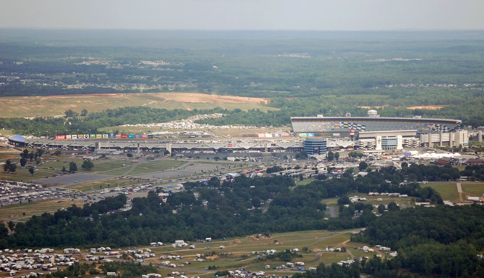

Yeehaw! DNC to judge best Carolina BBQ
Bidding opens today for an official barbecue sauce for the Democratic National Convention. Makers must tout the Carolinas’ three regional styles: vinegar (Eastern North Carolina), tomato-based (Western and Piedmont) and mustard-based (South Carolina.) The trio of flavors will be sold together as a gift pack on the convention website.
The winning bidder will receive a contract in an amount to be determined later, according to Jackie Bateman, grassroots finance director for the convention.
The idea is not only to show local flair, but to raise money. The local host committee is charged with raising nearly $37 million for the convention. Festivities kick off Labor Day with a festival for 35,000 at Charlotte Motor Speedway. Convention business officially starts Sept. 4, and ends Sept. 6 with President Barack Obama accepting the party’s nomination at Bank of America Stadium.
Applicants must be registered with Charlotte in 2012′s vendor directory.
Zuckerberg’s S-1 letter makes bold statements about relationship between Facebook, people, and governments
We hope to change how people relate to their governments and social institutions.
We believe building tools to help people share can bring a more honest and transparent dialogue around government that could lead to more direct empowerment of people, more accountability for officials and better solutions to some of the biggest problems of our time.
By giving people the power to share, we are starting to see people make their voices heard on a different scale from what has historically been possible. These voices will increase in number and volume. They cannot be ignored. Over time, we expect governments will become more responsive to issues and concerns raised directly by all their people rather than through intermediaries controlled by a select few.
Read his full S-1 letter here.
Jon Evans of TechCrunch noticed this language too, and speculates a bit on what he thinks it could mean going forward.
Pretty strong words from one of our generation’s greatest CEOs, and indicative of the depth of his vision for the company.
One Occupy Charlotte member’s story, via Huffington Post
A great in-depth look at Occupy Charlotte from the perspective of one of its members, Vic Suter.
Vic Suter is looking for Ghost. She sloshes through the slick grass and soggy leaves matting the grounds of the Old City Hall. She and the rest of Occupy Charlotte have called the property home since early October. She knows every sign, every tent in this place. But it’s Ghost’s tent that she wants. A cold rain begins to fall steadily on a camp that’s all but deserted. Vic, 22, doesn’t care.
Journalist/filmmaker Josh Fox arrested for filming House Republican hearing, what do you think?
In a stunning break with First Amendment policy, House Republicans directed Capitol Hill police to detain a highly regarded documentary crew that was attempting to film a Wednesday hearing on a controversial natural gas procurement practice. Initial reports from sources suggested that an ABC News camera was also prevented from taping the hearing; ABC has since denied that they sent a crew to the hearing.
Josh Fox, director of the Academy Award-nominated documentary “Gasland” was taken into custody by Capitol Hill police this morning, along with his crew, after Republicans objected to their presence, according to Democratic sources present at the hearing. The meeting of the House Subcommittee on Energy and Environment had been taking place in room 2318 of the Rayburn building.
Video of director Josh Fox being arrested:
Josh Fox only applied for credentials the day before the hearing, and never received confirmation. But in terms of precedent, journalists record hearings without credentials all the time, at least according to Arhur Spitzer, legal director of the ACLU in DC:
(…) congressional committees routinely allow professional journalists to record hearings even when they don’t have official press credentials, and excluding a journalist because he doesn’t share the political views of the committee chair is outrageous. The Supreme Court has explained many times that censorship based on viewpoint is the clearest kind of First Amendment violation, and that seems to be what happened here.
Much more info at the Huffington Post. What are your thoughts?
Steve Kerrigan’s letter: official DNC activities shortened to 3 days, Monday dedicated to “families and the community” at Charlotte Motor Speedway

Sent by DNCC CEO Steve Kerrigan this morning:
Nearly four years ago when President Obama accepted the Democratic nomination beneath a clear sky in Denver, a new chapter opened in American history. I’m excited to announce to you first that we plan to make history once again and break with conventions of the past by opening the doors to more people than ever before.
On the final day of the 2012 Democratic National Convention, President Obama will take the stage in the Bank of America Stadium, home of the Carolina Panthers, to accept the nomination of the Democratic Party as president with tens of thousands more people by his side.
But that’s not all. I’d also like to announce that we are shortening the convention program from the traditional four days to three to make room for a day to organize and celebrate the Carolinas, Virginia and the South and kick off the convention at Charlotte Motor Speedway on Labor Day. Dedicating Monday, September 3rd to families and the community hosting the convention will help show the world what we can do when we out-innovate, out-educate and out-build the rest of the world and build an economy that creates opportunity for all.
This week, I asked for your ideas on how to make the 2012 Democratic National Convention the most open and accessible in history and your thoughtful responses made it clear that success depends on people like you being a part of the process. Jerry in Tryon, NC suggested using the Charlotte Motor Speedway as an event location and Nora from Allentown, PA wants to make sure the convention has room for more than just delegates to attend.
Ideas like these are reminders that this convention is about more than political rituals and confetti falling from the rafters. It is about empowering Americans to be part of the solution and demonstrating what is best about our democracy.
Let us know your thoughts on how to involve more Americans in the convention as we countdown to President Obama’s acceptance speech at Bank of America Stadium on Thursday, September 6, 2012. To share your ideas, visit www.demconvention.com/share-ideas.asp.
From format to funding, this convention will increase the influence of people like you and bring more Americans into the conversation than ever before. Raise your voice, be heard and help us make history once again.